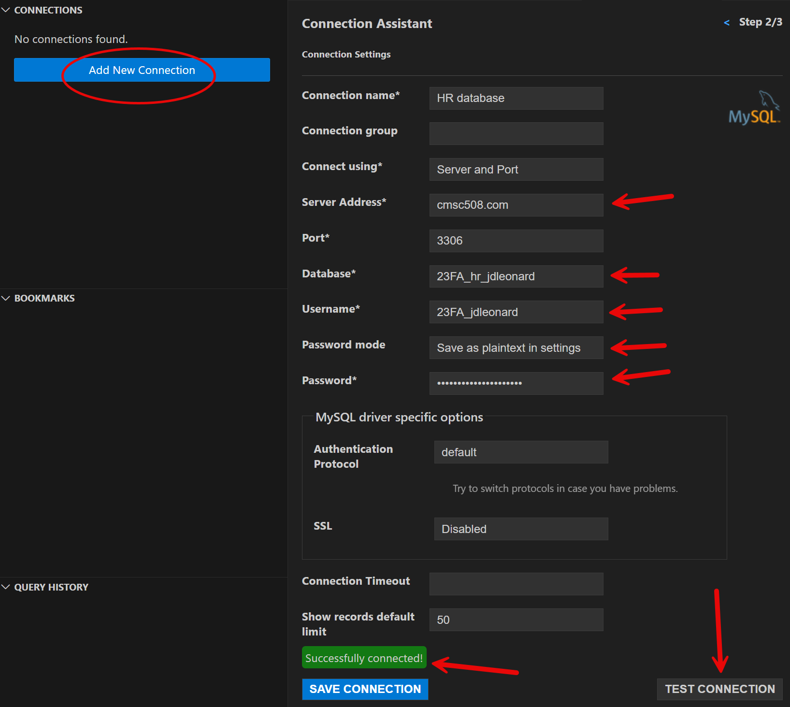
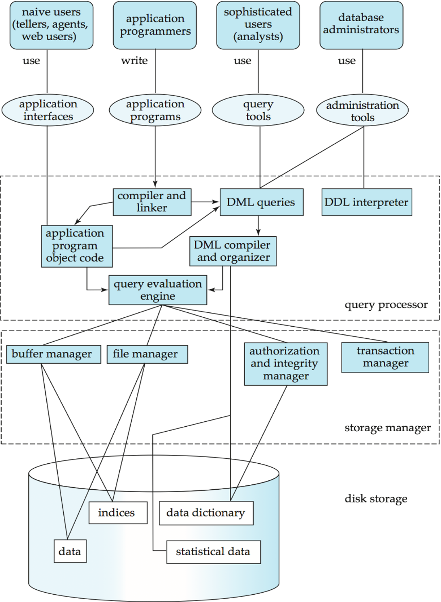
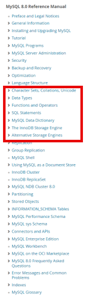
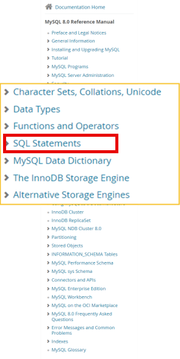
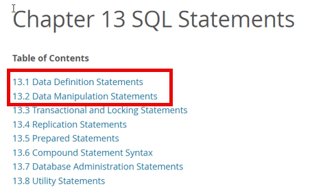
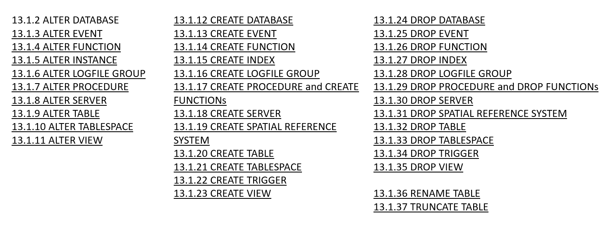
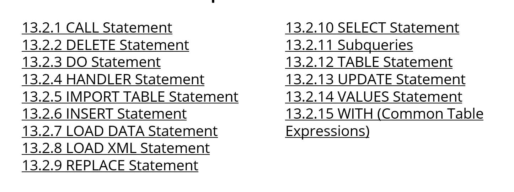

gantt
dateFormat M/DD/YYYY
axisFormat %W
section
Week 9 : crit, weekblock, 3/3/2024, 1w
section Topics
ER Models : m1, 1/7/2024, 3w
Rel. Algebra: m4, after m1, 2w
Normal forms: m5, after m4, 3w
SQL : m6, after m5, 4w
Adv. SQL: m7, after m6, 5w
SQL Selects
Lecture 16
Wednesday - Oct 16, 2024
Housekeeping
Discussion items
Midterm grades have been posted
No class on Friday - reading day.
Lecture topics
| Module | Week | Date | Day | Lectures | Deliverables/Notes |
|---|---|---|---|---|---|
| SQL | 9 | 10/16 | Wed | MTG16: L16 (SQL Selects) | |
| SQL | 9 | 10/18 | Fri | NO CLASS - reading day / Midterm grades due | |
| SQL | 9 | 10/20 | Sun | HW5 due (Getting started with SQL) | |
| SQL | 10 | 10/21 | Mon | MTG17: L17 (SQL Create/Insert/Delete/Update) | |
| SQL | 10 | 10/23 | Wed | MTG18: L18 (SQL toolset) | |
| SQL | 10 | 10/25 | Fri | Lasts day to Withdraw | |
| SQL | 10 | 10/27 | Sun | PrjDel 9 due (Working website using docker) | |
| SQL | 11 | 10/28 | Mon | MTG19: L19 (Intro to joins) |
You are here
Connecting to DBMS
Connecting to DBMS
Overview of the assignment
- We’re using mysql DBMS.
- There are multiple ways to connect
- Lots of tools to install
Each approach is handy for one aspect of development. You need to use all the ways!
Ways to connect
- phpMyAdmin - via the web
- ssh - to a linux terminal
- vscode - using SQLTools extension
- python - using a connection
Connecting to DBMS
1. phpmyadmin
- http://cmcs508.com/phpmyadmin
- Username: 24fa_(eid)
- for example: 24fa_jdleonard
- for example: 24fa_jdleonard
- Password: Shout4_(eid)_JOY
- for example, Shout4_jdleonard_JOY
This approach is most useful for managing the DBMS but NOT very useful for development.
- for example, Shout4_jdleonard_JOY
2. SSH to the server
Open a terminal window on your local machine.
Enter these commands on your terminal.
ssh 24fa_jdleonard@cmsc508.com
password: (Shout4_jdleonard_JOY)
mysql -p
password: (Shout4_jdleonard_JOY)
This is the quickest and most efficient approach for directly managing the DBMS but not very useful for development.
Connecting to DBMS
3. Visual Studio Code
Install:
- SQLTOOLS extension
- SQLTOOLS mysql connector
You should see a DB icon on the left
See the connection screen!
This approach is most useful for directly building and coding SQL code. Lots of cutting and pasting commands through an DB window.

Connecting to DBMS
4. Python code
Clone your homework repository
Install pyenv, poetry, quarto
Install libraries - different ways
- Auto: using poetry
- Manually using pip
- matplotlib jupyter plotly
- python-dotenv sqlalchemy pymysql
Create a .env file
Create your python code
See explorer.qmd for details!
import os
import pandas as pd
from dotenv import load_dotenv
from sqlalchemy import create_engine,text
# load credentials from .env file
load_dotenv()
# store these credentials a dictionary for later reference
config = {
'user': os.getenv("HW5_USER"),
'password': os.getenv("HW5_PASSWORD"),
'host': os.getenv("HW5_HOST"),
'database': os.getenv("HW5_DB_NAME")
}
engine_uri = f"mysql+pymysql://{config['user']}:{config['password']}@{config['host']}/{config['database']}"
# create a database connection. THIS IS THE ACTUAL CONNECTION!
cnx = create_engine(engine_uri)
This approach is most useful for developing the wrapper application around the SQL code.
MySQL Passwords
How do I change my password?
You actually have TWO different mysql accounts: one for local connections and a second for remote connections.
Your remote and local accounts are granted permission to access your
hr,userandteamdatabases.Your local and remote accounts were assigned the same password
Logins are managed transparently so it looks like only one account!
You can only change your password through your local or remote connections.
Unless you have CREATE USER permissions you’ll not be able to alter one user from another connection.
How do I change my password?
Here is the one SQL command:
Local connections
Used when you connect via PhpMyAdmin or when you log to the server directly via SSH.
Username: ‘24fa_jdleonard’@‘localhost’
You can only change this password from
phpmyadminor from the command line on the server itself.
Remote connections
Used when you connect through your laptop (remotely) using vscode or a language like python.
Username: ‘24fa_jdleonard’@‘%’
You can only change this through VS Code connection or through your application program.
Intro to SQL
Interacting with the database
A DBMS is software that manages databases, providing an interface between users, applications, and the database. The DBMS handles the internal mechanics of data storage, querying, transaction management, and access control. When users or applications issue commands, the DBMS processes these commands and ensures that the database remains consistent, efficient, and secure.
Interacting with a Database Management System (DBMS) and a database involves several layers of operations, each designed to handle a specific aspect of how data is stored, managed, secured, and retrieved.
SQL (structured query language) is the computer language we use to interact with the DBMS.
SQL (Structured Query Language )
SQL (Structured Query Language): is a standardized language used for managing and querying relational databases. It provides commands for defining, manipulating, controlling, and retrieving data in databases.
ANSI SQL Standard: ANSI (American National Standards Institute) defines the core SQL standard, ensuring a common foundation for relational database operations across different systems, though specific features may vary by vendor. The most recent version of the SQL standard is SQL:2023, formally adopted in June 2023.
SQL Dialects by Vendor: While adhering to ANSI SQL, many database vendors (like MySQL, PostgreSQL, Oracle, SQL Server) extend SQL with proprietary features (e.g., Oracle’s PL/SQL, Microsoft’s T-SQL) to support additional functionalities unique to their systems.
SQL command groups
SQL commands are grouped based on what they do to/for the DBMS. We sometimes refer to these groups as separate languages: DDL, DML, DCL, and TCL.
Design and Structure (DDL): When building a database, DDL is the first interaction, defining how data will be stored and structured. This foundational step ensures the database can efficiently support future operations.
Manipulating and Retrieving Data (DML): The core daily interactions with the database happen through DML. Whether adding new entries, retrieving data, or updating records, these operations are what end-users experience.
Security and Permissions (DCL): Modern databases are often accessed by multiple users and applications. Ensuring that data access is controlled and secure is essential, and DCL ensures that only the right users have the appropriate access levels.
Maintaining Data Integrity (TCL): In multi-user environments or where transactions involve complex steps (e.g., financial transactions, inventory updates), TCL ensures that the database remains in a consistent state even when failures or conflicts occur.
DDL (Data Definition Language)
- Purpose: Defines the structure and organization of the database.
- Role: DDL commands interact directly with the DBMS to create, modify, or delete database objects such as tables, indexes, and schemas.
- Example: When creating a new table, the DBMS allocates the necessary storage and manages the metadata that defines the table structure. DDL commands ensure that the database schema evolves as the application grows.
- Use Cases:
- Creating a new table to store user data.
- Altering the structure of an existing table to accommodate new fields.
DDL (Data Definition Language)
Key DDL commands include:
CREATE: Used to create new database objects like tables, indexes, views, or databases.ALTER: Used to modify the structure of an existing database object (e.g., adding or removing columns in a table).DROP: Used to delete database objects like tables, indexes, or entire databases.TRUNCATE: Removes all records from a table, but keeps the table structure intact.RENAME: Used to rename database objects.
DDL commands define and change the structure or schema of a database, unlike DML, which focuses on manipulating the data within those structures.
DDL (Data Definition Language)
- DDL compiler generates a set of tables stored in a data dictionary
- Data dictionary contains metadata about:
- Database tables, fields and data types
- Primary and foreign keys
- Data integrity constrants
- Referential integrity
- Access and authorization rules
DML (Data Manipulation Language)
- Purpose: Manages the actual data within the database.
- Role: DML commands interact with the DB to insert, retrieve, update, and delete data. The DBMS processes these requests and ensures the data is accessed efficiently and accurately.
- Example: When querying data (e.g.,
SELECT), the DBMS retrieves the requested information from the database, handles the query optimizations, and returns results to the user or application. - Use Cases:
- Retrieving customer data for an e-commerce application.
- Inserting new product information into a database.
DCL (Data Control Language)
- Purpose: Controls access to the data within the database.
- Role: DCL commands interact with the DBMS to manage user permissions and security. This ensures that only authorized users can access or modify specific parts of the database.
- Example: Granting access to a developer to only read the data while restricting their ability to modify or delete it.
- Use Cases:
- Granting access to specific tables for an application.
- Revoking permissions from users who should no longer access the database.
TCL (Transaction Control Language)
- Purpose: Manages and controls database transactions.
- Role: TCL commands work closely with the DBMS to ensure that changes made to the database maintain ACID (Atomicity, Consistency, Isolation, Durability) properties. This ensures that transactions are processed reliably.
- Example: When performing a
COMMITafter multipleINSERToperations, the DBMS makes the changes permanent. If any part of the transaction fails, aROLLBACKcan undo all the changes to ensure data integrity. - Use Cases:
- Performing multiple updates to an inventory system and committing them only when all changes are successfully made.
- Rolling back a transaction if a bank transfer fails midway, ensuring no partial changes occur.
SQL Summary
SQL is the overarching language for interacting with the relational database management system.
SQL commands are organized into languages that play a distinct roles in the overall functioning of the DBMS. Together, they allow the applications programmer to:
- Define the structure (DDL),
- Manipulate the data (DML),
- Secure the database (DCL), and
- Ensure reliable transactions (TCL).
By interacting with these layers, the DBMS provides a seamless, powerful way to manage data efficiently, ensuring that applications can scale, users can access information securely, and data integrity is maintained across transactions.
MySQL DBMS
MYSQL DBMS
Leveraging the power
What not simply use 2-D arrays or other data structures in our programs? Why use a data base at all?
The DBMS will DO LOTS OF WORK for us AUTOMATICALLY. We simply need to know how to tell it what we want it to do.
We can provide these management and operating rules when tables are created.
The DBMS will enforce the rules in real-time behind the scenes.
The DBMS maintains several databases specifically for the management of the database itself!
- information_schema
- performance_schema

MySQL DBMS


MYSQL Documentation

Two types of statements:
- Data Definition Statement (DDL)
- Data Manipulation Statements (DML)
DDL - Data Definition Language

DML - Data Manipulation Language

Getting to SELECT
Getting to Select
Database access workflow
Retrieving credentials into your program. No hardcoding!
Connecting to the database using a local database engine.
Through the life of the program:
- Sending the query to the DBMS through the connection.
- Retriving the result set
Finally, closing the connection.
Key terms
- credentials
- host, username, password, database
- local database engine
- software on your machine that manages the connection through the internet to your remote server.
- query
- a command sent to the remove database server
- result set
- the package returned from the remote server. It may contain data or error information.
Database connection
```{python}
#| eval: true
import os
import pandas as pd
from dotenv import load_dotenv
from sqlalchemy import create_engine,text
# load credentials from .env file
load_dotenv()
# store these credentials a dictionary for later reference
config = {
'user': os.getenv("HW5_USER"),
'password': os.getenv("HW5_PASSWORD"),
'host': os.getenv("HW5_HOST"),
'database': os.getenv("HW5_DB_NAME")
}
engine_uri = f"mysql+pymysql://{config['user']}:{config['password']}@{config['host']}/{config['database']}"
# create a database connection. THIS IS THE ACTUAL CONNECTION!
cnx = create_engine(engine_uri)
```Connection block
This single block of code general sits at the top of all your QMD files.
This block of code creates the cnx variable - the actually connection to the database.
We’ll use cnx later in the code whenever we want to talk with the DBMS.
Database connection - Imports
```{python}
#| eval: true
#| code-line-numbers: 4-7
import os
import pandas as pd
from dotenv import load_dotenv
from sqlalchemy import create_engine,text
# load credentials from .env file
load_dotenv()
# store these credentials a dictionary for later reference
config = {
'user': os.getenv("HW5_USER"),
'password': os.getenv("HW5_PASSWORD"),
'host': os.getenv("HW5_HOST"),
'database': os.getenv("HW5_DB_NAME")
}
engine_uri = f"mysql+pymysql://{config['user']}:{config['password']}@{config['host']}/{config['database']}"
# create a database connection. THIS IS THE ACTUAL CONNECTION!
cnx = create_engine(engine_uri)
```Imports
The import commands load modules into your python program.
These modules must first be installed in your virtual environment using poetry or pip to install the necessary modules. I prefer poetry!
dotenv module is used to load environment variable from disk into memory.
sqlalchemy module provides many different tools for connecting to, managing, and querying databases. sqlalchemy is known as an Object Relational Mapper or ORM. When used to it’s full extent it allows to you seamlessly load and store objects without having to think about the SQL.
But that kind of defeats the purpose for this class! So we’ll only use a few of the tools provided.
Database connection - Load .env into environment
```{python}
#| eval: true
#| code-line-numbers: 8-16
import os
import pandas as pd
from dotenv import load_dotenv
from sqlalchemy import create_engine,text
# load credentials from .env file
load_dotenv()
# store these credentials a dictionary for later reference
config = {
'user': os.getenv("HW5_USER"),
'password': os.getenv("HW5_PASSWORD"),
'host': os.getenv("HW5_HOST"),
'database': os.getenv("HW5_DB_NAME")
}
engine_uri = f"mysql+pymysql://{config['user']}:{config['password']}@{config['host']}/{config['database']}"
# create a database connection. THIS IS THE ACTUAL CONNECTION!
cnx = create_engine(engine_uri)
```Getting your connection variables.
Rather than hard-coding your database connection into your code, we’ll store the connection information on your disk and load it when your program starts.
load_dotenv() searches for a .env file and if found, loads the contents into your environment.
os.getenv() searches for a key in the environnment and if found returns it’s value.
A database connection is defined by four attributes: * Server name * Database name * Username * Password
To minimize pollution in the namespace we’ll store these four separate variables in a single dictionary for later reference.
Database connection - Create connection
```{python}
#| eval: true
#| code-line-numbers: 17-20
import os
import pandas as pd
from dotenv import load_dotenv
from sqlalchemy import create_engine,text
# load credentials from .env file
load_dotenv()
# store these credentials a dictionary for later reference
config = {
'user': os.getenv("HW5_USER"),
'password': os.getenv("HW5_PASSWORD"),
'host': os.getenv("HW5_HOST"),
'database': os.getenv("HW5_DB_NAME")
}
engine_uri = f"mysql+pymysql://{config['user']}:{config['password']}@{config['host']}/{config['database']}"
# create a database connection. THIS IS THE ACTUAL CONNECTION!
cnx = create_engine(engine_uri)
```Creating the connection
Armed with our connection varaibles we create a connection string and open a connection to the database using a local database engine.
A connection to ANY database and server starts with a connection string
Through the connection string you can customize the connection and how information passes through it.
Connection strings are used by your local database engine to locate the database host, open the appropriate port, pass credentials like username and password, and finally select the database to use.
Connection strings also manage which languages and character sets are used, sizes of transmission buffers, and more.
RTFM for your local database engine!
Another helper block
In my code I created another block with a function.
Normally, you’d set echo: false to not display the code.
```{python}
from tabulate import tabulate
from IPython.display import display, Markdown
def display_dataframe_as_table( df, width="100%" ):
""" Display dataframe in pretty format for Quarto """
markdown_table = tabulate(df, headers='keys',showindex=False)
html_table = markdown_table
display(Markdown(html_table))
```Select statement
A SELECT query is the one of the most fundamental statements in SQL.
A SELECT statement describe a request to perform operations within the database and return a result set.
This result set is a relation.
This result can be used in subsequent operations or stored back into the DB as a new table.
A SQL query is relational algebra:
\(\Pi_{A_1, A_2, ... A_n}(\sigma_{P}(R_1 \times R_2 \times ... \times R_n) )\)
SELECT A1, A2, A3
FROM R1,R2
WHERE P
ORDER BY A2,A3,A1;
- A* represents an attribute (column), a literal, a function, or an operation
- R* represents a relation (table), cartesian project, or join
- P is a predicate, conditions or filters
SELECT clause and examples
The select clause lists the attributes desired in the result of a query, corresponds to the projection operation of the relational algebra
SQL names are case insensitive
SQL allows duplicates in relations as well as in query results
To force the elimination of duplicates, use the keyword distinct
An asterisk in the select clause denotes “all attributes”
May rename columns using alias
Regions table
| region_id | region_name | |
|---|---|---|
| 0 | 1 | Europe |
| 1 | 2 | Americas |
| 2 | 3 | Asia |
| 3 | 4 | Middle East and Africa |
SELECT clause and examples
Using * to select all columns
Employees table - first 20 rows
| employee_id | first_name | last_name | phone_number | hire_date | job_id | salary | commission_pct | manager_id | department_id | ||
|---|---|---|---|---|---|---|---|---|---|---|---|
| 0 | 100 | Steven | King | SKING | 515.123.4567 | 2003-06-17 | AD_PRES | 24000.0 | NaN | NaN | 90.0 |
| 1 | 101 | Neena | Kochhar | NKOCHHAR | 515.123.4568 | 2005-09-21 | AD_VP | 17000.0 | NaN | 100.0 | 90.0 |
| 2 | 102 | Lex | De Haan | LDEHAAN | 515.123.4569 | 2001-01-13 | AD_VP | 17000.0 | NaN | 100.0 | 90.0 |
| 3 | 103 | Alexander | Hunold | AHUNOLD | 590.423.4567 | 2006-01-03 | IT_PROG | 9000.0 | NaN | 102.0 | 60.0 |
| 4 | 104 | Bruce | Ernst | BERNST | 590.423.4568 | 2007-05-21 | IT_PROG | 6000.0 | NaN | 103.0 | 60.0 |
| 5 | 105 | David | Austin | DAUSTIN | 590.423.4569 | 2005-06-25 | IT_PROG | 4800.0 | NaN | 103.0 | 60.0 |
| 6 | 106 | Valli | Pataballa | VPATABAL | 590.423.4560 | 2006-02-05 | IT_PROG | 4800.0 | NaN | 103.0 | 60.0 |
| 7 | 107 | Diana | Lorentz | DLORENTZ | 590.423.5567 | 2007-02-07 | IT_PROG | 4200.0 | NaN | 103.0 | 60.0 |
| 8 | 108 | Nancy | Greenberg | NGREENBE | 515.124.4569 | 2002-08-17 | FI_MGR | 12008.0 | NaN | 101.0 | 100.0 |
| 9 | 109 | Daniel | Faviet | DFAVIET | 515.124.4169 | 2002-08-16 | FI_ACCOUNT | 9000.0 | NaN | 108.0 | 100.0 |
| 10 | 110 | John | Chen | JCHEN | 515.124.4269 | 2005-09-28 | FI_ACCOUNT | 8200.0 | NaN | 108.0 | 100.0 |
| 11 | 111 | Ismael | Sciarra | ISCIARRA | 515.124.4369 | 2005-09-30 | FI_ACCOUNT | 7700.0 | NaN | 108.0 | 100.0 |
| 12 | 112 | Jose Manuel | Urman | JMURMAN | 515.124.4469 | 2006-03-07 | FI_ACCOUNT | 7800.0 | NaN | 108.0 | 100.0 |
| 13 | 113 | Luis | Popp | LPOPP | 515.124.4567 | 2007-12-07 | FI_ACCOUNT | 6900.0 | NaN | 108.0 | 100.0 |
| 14 | 114 | Den | Raphaely | DRAPHEAL | 515.127.4561 | 2002-12-07 | PU_MAN | 11000.0 | NaN | 100.0 | 30.0 |
| 15 | 115 | Alexander | Khoo | AKHOO | 515.127.4562 | 2003-05-18 | PU_CLERK | 3100.0 | NaN | 114.0 | 30.0 |
| 16 | 116 | Shelli | Baida | SBAIDA | 515.127.4563 | 2005-12-24 | PU_CLERK | 2900.0 | NaN | 114.0 | 30.0 |
| 17 | 117 | Sigal | Tobias | STOBIAS | 515.127.4564 | 2005-07-24 | PU_CLERK | 2800.0 | NaN | 114.0 | 30.0 |
| 18 | 118 | Guy | Himuro | GHIMURO | 515.127.4565 | 2006-11-15 | PU_CLERK | 2600.0 | NaN | 114.0 | 30.0 |
| 19 | 119 | Karen | Colmenares | KCOLMENA | 515.127.4566 | 2007-08-10 | PU_CLERK | 2500.0 | NaN | 114.0 | 30.0 |
SELECT clause and examples
Gathering all last names
SELECT clause and examples
Combining last and first names
SELECT clause and examples
attribute can be literal or function
```{python}
#| code-line-numbers: 4-8
result = pd.read_sql("""
select
27 as "Literal",
now() as "Current Time"
from
dual
""",cnx)
result.head(7)
```| Literal | Current Time | |
|---|---|---|
| 0 | 27 | 2024-10-16 13:53:21 |
Note that we’re using a built-in table named dual that returns what you put in as a table that can be used in subsequent operations.
Doing computations
The attribute can be a function or arithmetic operation
```{python}
#| code-line-numbers: 4-6
result = pd.read_sql("""
select concat(last_name,',',first_name) as full_name,
salary*12 as "Annual Salary"
from employees
""",cnx)
result.head(5)
```| full_name | Annual Salary | |
|---|---|---|
| 0 | King,Steven | 288000.0 |
| 1 | Kochhar,Neena | 204000.0 |
| 2 | De Haan,Lex | 204000.0 |
| 3 | Hunold,Alexander | 108000.0 |
| 4 | Ernst,Bruce | 72000.0 |
WHERE clause and examples
The WHERE clause specifies conditions that the results must satisfy, corresponding to the \(\sigma\) predicate in relational algebra.
An individual WHERE element returns TRUE or FALSE for every row. This is applied during the query and will return only rows that evaluate TRUE in the where clause.
Attributes in where clause can be compared using relational operators: < <= = >= >
WHERE elements can be combined using AND, OR and NOT logical operators.
WHERE also uses special operators: BETWEEN, IN and IS NULL
```{python}
#| code-line-numbers: 5-10
result = pd.read_sql("""
-- note that this is a monthly salary!
SELECT
last_name, first_name, salary
FROM
employees
WHERE
salary > 10000
""",cnx)
result.head(5)
```| last_name | first_name | salary | |
|---|---|---|---|
| 0 | King | Steven | 24000.0 |
| 1 | Kochhar | Neena | 17000.0 |
| 2 | De Haan | Lex | 17000.0 |
| 3 | Greenberg | Nancy | 12008.0 |
| 4 | Raphaely | Den | 11000.0 |
WHERE clause and examples
Selecting a department
```{python}
#| code-line-numbers: 4-6
result = pd.read_sql("""
select last_name,department_id
from employees
where department_id=110;
""",cnx)
result.head(7)
```| last_name | department_id | |
|---|---|---|
| 0 | Higgins | 110 |
| 1 | Gietz | 110 |
Data types matter. You’ll get an error if you set department_id=‘110’
Using BETWEEN
The attribute can be a function or arithmetic operation
```{python}
#| code-line-numbers: 4-6
result = pd.read_sql("""
select concat(last_name,',',first_name) as full_name, salary
from employees
where salary BETWEEN 10000 and 12000;
""",cnx)
result.head(5)
```| full_name | salary | |
|---|---|---|
| 0 | Raphaely,Den | 11000.0 |
| 1 | Errazuriz,Alberto | 12000.0 |
| 2 | Cambrault,Gerald | 11000.0 |
| 3 | Zlotkey,Eleni | 10500.0 |
| 4 | Tucker,Peter | 10000.0 |
WHERE clause and examples
Using IN
```{python}
#| code-line-numbers: 4-6
result = pd.read_sql("""
select last_name,department_id
from employees
where department_id in (100,145,146)
""",cnx)
result.head(7)
```| last_name | department_id | |
|---|---|---|
| 0 | Greenberg | 100 |
| 1 | Faviet | 100 |
| 2 | Chen | 100 |
| 3 | Sciarra | 100 |
| 4 | Urman | 100 |
| 5 | Popp | 100 |
The long way
```{python}
#| code-line-numbers: 4-6
result = pd.read_sql("""
select last_name,department_id
from employees
where department_id=30 or department_id=70 or department_id=120
""",cnx)
result
```| last_name | department_id | |
|---|---|---|
| 0 | Raphaely | 30 |
| 1 | Khoo | 30 |
| 2 | Baida | 30 |
| 3 | Tobias | 30 |
| 4 | Himuro | 30 |
| 5 | Colmenares | 30 |
| 6 | Baer | 70 |
WHERE clause and examples
Computations
Calculating commissions
What are the NaN “not a number” entries?
How do we remove the NaN (not a number) from list?
Calculating commissions
| Name | Monthly | With/Commission | |
|---|---|---|---|
| 0 | Abel,Ellen | 11000.0 | 135300.0 |
| 1 | Ande,Sundar | 6400.0 | 77440.0 |
| 2 | Atkinson,Mozhe | 2800.0 | NaN |
| 3 | Austin,David | 4800.0 | NaN |
| 4 | Baer,Hermann | 10000.0 | NaN |
| ... | ... | ... | ... |
| 102 | Vollman,Shanta | 6500.0 | NaN |
| 103 | Walsh,Alana | 3100.0 | NaN |
| 104 | Weiss,Matthew | 8000.0 | NaN |
| 105 | Whalen,Jennifer | 4400.0 | NaN |
| 106 | Zlotkey,Eleni | 10500.0 | 128100.0 |
107 rows × 3 columns
IFNULL operator
The IFNULL operator
IFNULL( expr1, expr2 ) replaces NULL with a value.
IF expr1 is NOT NULL then returns expr1
IF expr1 IS NULL, then returns expr2.
Calculating commissions
IFNULL operator
IFNULL( expr1, 0.0)
| Name | Monthly | With/Commission | |
|---|---|---|---|
| 0 | Abel,Ellen | 11000.0 | 135300.0 |
| 1 | Ande,Sundar | 6400.0 | 77440.0 |
| 2 | Atkinson,Mozhe | 2800.0 | 0.0 |
| 3 | Austin,David | 4800.0 | 0.0 |
| 4 | Baer,Hermann | 10000.0 | 0.0 |
| ... | ... | ... | ... |
| 102 | Vollman,Shanta | 6500.0 | 0.0 |
| 103 | Walsh,Alana | 3100.0 | 0.0 |
| 104 | Weiss,Matthew | 8000.0 | 0.0 |
| 105 | Whalen,Jennifer | 4400.0 | 0.0 |
| 106 | Zlotkey,Eleni | 10500.0 | 128100.0 |
107 rows × 3 columns
IFNULL( expr1, ‘missing’)
| Name | Monthly | With/Commission | |
|---|---|---|---|
| 0 | Abel,Ellen | 11000.0 | 135300.0000 |
| 1 | Ande,Sundar | 6400.0 | 77440.0000 |
| 2 | Atkinson,Mozhe | 2800.0 | missing |
| 3 | Austin,David | 4800.0 | missing |
| 4 | Baer,Hermann | 10000.0 | missing |
| ... | ... | ... | ... |
| 102 | Vollman,Shanta | 6500.0 | missing |
| 103 | Walsh,Alana | 3100.0 | missing |
| 104 | Weiss,Matthew | 8000.0 | missing |
| 105 | Whalen,Jennifer | 4400.0 | missing |
| 106 | Zlotkey,Eleni | 10500.0 | 128100.0000 |
107 rows × 3 columns
String operations
The operator LIKE uses patterns (case insensitive) (use LIKE BINARY for case sensitive) for string-matching operations using two special characters:
* percentage ( % ) matches any substring (none or many characters)
* underscore ( _ ) matches any single characterExamples:
‘Intro%’ matches any string beginning with “Intro”
‘%Comp%’ matches any string containing “Comp” as a substring
’_ _ _’ matches any string of exactly three characters
‘_ _ _ %’ matches any string of at least three characters
‘%_ a _’ same as before but the second to the last letter is ‘a’
String operations
DOUBLE %% when using Python
DOUBLE %% when using Python
```{python}
#| eval: true
#| code-line-numbers: 5-6
result = pd.read_sql("""
SELECT phone_number FROM employees
WHERE phone_number LIKE '%%123%%';
""",cnx)
result
```| phone_number | |
|---|---|
| 0 | 515.123.4567 |
| 1 | 515.123.4568 |
| 2 | 515.123.4569 |
| 3 | 650.123.1234 |
| 4 | 650.123.2234 |
| 5 | 650.123.3234 |
| 6 | 650.123.4234 |
| 7 | 650.123.5234 |
| 8 | 650.121.1234 |
| 9 | 515.123.4444 |
| 10 | 515.123.5555 |
| 11 | 603.123.6666 |
| 12 | 515.123.7777 |
| 13 | 515.123.8888 |
| 14 | 515.123.8080 |
| 15 | 515.123.8181 |
ORDER BY clause
ORDER BY is used to specify the sort order in the result set.
The result set is sorted by the first attribute listed in the ORDER BY.
If there is a tie, ORDER BY moves to the second attribute, and so on.
Attribute expression may be modified with ASC (the default) or DESC (for descending)
Attributes in ORDER BY can be computed!
Example
```{python}
#| eval: true
#| code-line-numbers: 5-10
result = pd.read_sql("""
select
concat(last_name,',',first_name) as "Full Name", salary as "Monthly"
from employees
order by
salary desc,
last_name, first_name
""",cnx)
result
```| Full Name | Monthly | |
|---|---|---|
| 0 | King,Steven | 24000.0 |
| 1 | De Haan,Lex | 17000.0 |
| 2 | Kochhar,Neena | 17000.0 |
| 3 | Russell,John | 14000.0 |
| 4 | Partners,Karen | 13500.0 |
| ... | ... | ... |
| 102 | Gee,Ki | 2400.0 |
| 103 | Landry,James | 2400.0 |
| 104 | Markle,Steven | 2200.0 |
| 105 | Philtanker,Hazel | 2200.0 |
| 106 | Olson,TJ | 2100.0 |
107 rows × 2 columns
SELECT summary
SELECT- variable to projectFROM- tables to combineWHERE- filters to selectORDER BY- order of resultsCONCAT- combining columnsAS- Renaming columnsLiterals
Computations in SELECT
WHERE- AND, OR, NOT
<<===>>
BETWEEN- for whereIN- checking set membershipNULLvaluesIFNULLoperator- String matches
%%
Housekeeping
Discussion items
Midterm grades have been posted
No class on Friday - reading day.
Lecture topics
| Module | Week | Date | Day | Lectures | Deliverables/Notes |
|---|---|---|---|---|---|
| SQL | 9 | 10/16 | Wed | MTG16: L16 (SQL Selects) | |
| SQL | 9 | 10/18 | Fri | NO CLASS - reading day / Midterm grades due | |
| SQL | 9 | 10/20 | Sun | HW5 due (Getting started with SQL) | |
| SQL | 10 | 10/21 | Mon | MTG17: L17 (SQL Create/Insert/Delete/Update) | |
| SQL | 10 | 10/23 | Wed | MTG18: L18 (SQL toolset) | |
| SQL | 10 | 10/25 | Fri | Lasts day to Withdraw | |
| SQL | 10 | 10/27 | Sun | PrjDel 9 due (Working website using docker) | |
| SQL | 11 | 10/28 | Mon | MTG19: L19 (Intro to joins) |

CMSC 408 - Databases